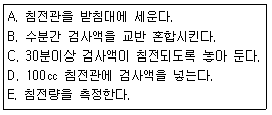
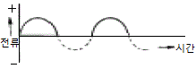
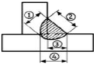
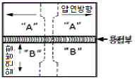

자기비파괴검사산업기사(구) (2005-03-20 기출문제)
1과목: 자기탐상시험원리
1. 다음 중 시험체 외부의 도체에 통전하여 시험체를 자화시키는 검사법의 조합은?
- 전류관통법, 코일법
- 축통전법, 직각통전법
- 극간법, 프로드법
- 자속관통법, 축통전법
(정답률: 알수없음)

2. 극간법으로 자분탐상검사할 때의 내용으로 틀린 것은?
- 모든 방향의 결함을 검출하기 위해서는 90도 방향으로 바꾸어 2회 이상 탐상한다.
- 자력선은 폐곡선이므로 자극간의 간격에 관계없이 자계의 분포는 일정하다.
- 철심의 단면적이 클수록 휴대하기가 불편하다.
- 자석의 자화능력은 철심의 재료와 전류의 크기에 따라 달라진다.
(정답률: 알수없음)
3. 자분탐상시험에서 검사액의 분산매가 지녀야 할 일반적인 성질이 아닌 것은?
- 점도가 낮을 것
- 시험체에 해가 없을 것
- 휘발성이 적을 것
- 인화점이 낮을 것
(정답률: 알수없음)
4. 자속밀도(magnetic flux density)를 바르게 설명한 것은?
- 전류가 흐르는 코일의 감은수(turn)에 반비례함
- 맥스웰(maxwell)로 표시하는 자력선의 수
- 단위면적당 자력선의 수
- 시험체의 밀도에 비례함
(정답률: 알수없음)
5. 자분탐상시험을 실시하여 어떤 지시가 조직, 형상 등의 영향에 의해 건전부와 다르게 나타나는 부분을 무엇이라 하는가?
- 불연속부
- 결함부
- 지시
- 변형
(정답률: 알수없음)
6. 다음 중 투자율(Permeability,μ)을 나타내는 식은? (단, H : 자계의 세기, B : 자속밀도, i : 전류치)
- μ = H x B
- μ = H/B
- μ = B/H
- μ = i/(H x B)
(정답률: 알수없음)
7. 코일법에 나타나는 반자계의 설명이 올바른 것은?
- 반자계의 세기는 코일의 감은 수에 영향을 받는다.
- 반자계의 분포는 코일의 내면에서 가장 크다.
- (코일의 길이/코일의 지름)의 값이 2이상일 때에는 코일법의 적용이 바람직하지 않다.
- 직류전원보다 교류가 반자계의 영향이 크다.
(정답률: 알수없음)
8. 자분탐상검사의 전류관통법에 사용되는 관통봉에 구리봉을 사용하였다. 이 물질은 다음 중 어디에 속하는가?
- 상자성체
- 역자성체
- 강자성체
- 반자성체
(정답률: 알수없음)
9. 다음 중 자분탐상검사용 부속기기가 아닌 것은?
- 침전관(Centrifuge Tube)
- 스프레이 건(Spray Gun)
- 자장계(Field Indicator)
- 충전기(Charger)
(정답률: 알수없음)
10. 다음 중 자계(자장)에 전혀 영향을 받지 않으므로 자분탐상시험법으로 검사할 수 없는 재료는?
- 철
- 니켈
- 구리
- 코발트
(정답률: 알수없음)
11. 자계의 세기를 줄여 잔류자기를 제거하는 방법이 아닌 것은?
- 제품을 큐리점 이상으로 열처리 하는 방법
- 잔류전류를 감소시키는 방법
- 제품을 코일로부터 멀리하는 방법
- 코일을 제품으로부터 멀리하는 방법
(정답률: 알수없음)
12. 용접부의 좁은 개선면을 자분탐상검사할 때 자계의 분포를 확인하기 위하여 사용하는 방법은?
- A형 표준시험편을 개선면에 부착하여 검사한다.
- B형대비시험편으로 인공흠의 결함깊이를 비교한다.
- C형 표준시험편을 개선면에 부착한 후에 검사한다.
- 시험체에 적용되는 자계의 분포를 검사한다.
(정답률: 알수없음)
13. 침투탐상검사법과 비교한 자분탐상검사법의 장점이 아닌 것은?
- 표면 직하 결함의 검출이 가능하다.
- 얇은 도장 및 도금 등에서 검사가 가능하다.
- 정밀한 전처리가 요구되지 않는다.
- 검사후 탈자가 필요하다.
(정답률: 알수없음)
14. 자분탐상검사시 사용하는 검사액의 농도 점검방법을 순서대로 바르게 나열한 것은?

- A→B→C→D→E
- B→D→A→C→E
- B→C→A→D→E
- D→C→B→A→E
(정답률: 알수없음)
15. 강에 대한 자분탐상시험시 탈자가 필요없는 경우는?
- 연속시험시 전(前) 회의 자화에 의해 나쁜 영향을 받을 염려가 있을 때
- 잔류자기가 기계가공에 나쁜 영향을 미칠 염려가 있을 때
- 시험 부분이 마찰부분이나 그에 근접한 장소일 때
- 시험품에 큐리점이상으로 열처리가 요구될 때
(정답률: 알수없음)
16. 전처리는 자분탐상시험 결과에 큰 영향을 미치는 공정으로서 다음 중 전처리의 목적이 아닌 것은?
- 탐상시험에 관계되는 조작으로부터 시험체의 손상을 방지한다.
- 예상되는 결함을 사전에 제거하여 시험을 쉽게 한다.
- 결함부에 자분의 부착량을 늘리어 결함모양의 관찰을 쉽게 한다.
- 결함 이외의 부분에 부착되는 자분의 양을 줄여 지시모양의 관찰을 용이하게 한다.
(정답률: 알수없음)
17. 자분탐상시험시 결함을 검출하는데 가장 좋은 결함검출 효과를 기대할 수 있는 결함의 방향과 자계의 방향은?
- 자계 방향에 대하여 180°로 위치한 결함
- 자계 방향에 대하여 45°로 위치한 결함
- 자계 방향에 대하여 90°로 위치한 결함
- 전류 흐름 방향에 대하여 90°로 위치한 결함
(정답률: 알수없음)
18. 다음 중 그림과 같은 파형을 무엇이라고 하는가?

- 단상 교류 전파 정류(Full Wave Rectified Single Phase AC)
- 단상 교류 반파 정류(Half Wave Rectified Single Phase AC)
- 단상 직류 전파 정류(Full Wave Rectified Single Phase DC)
- 단상 직류 반파 정류(Half Wave Rectified Single Phase DC)
(정답률: 알수없음)
19. 비투자율 400인 강자성체를 환상 솔레노이드내에 넣었을 때 평균 자계의 세기가 300A/m 라면 강자성체 중의 자속밀도는? (단, 진공중의 투자율 μ0 = 4πx10-7[H/m])
- 0.15Wb/m2
- 0.30Wb/m2
- 0.45Wb/m2
- 0.55Wb/m2
(정답률: 알수없음)
20. 서브머지드아크 용접(Submerged Arc Welding)에서 간헐적인 넓고 흐린 자분모양이 습식법보다 건식법에서 잘 나타났다. 무슨결함인가?
- 크레이터 균열
- 용입부족(IP)
- 표면하의 슬래그 혼입(Slag Inclusion)
- 언더컷(Undercut)
(정답률: 알수없음)
2과목: 자기탐상검사
21. 직류(DC)를 이용한 탈자는 30단계 정도의 반전 및 감소를 하면서 탈자한다. 이의 특징이 아닌 것은?
- 큰 부품에 좋은 효과를 준다.
- 3인치 이상의 직경을 가진 부품의 탈자에 좋다.
- 중심도체법에 좋은 효과를 준다.
- 선형자화한 부품에 한정적으로 사용한다.
(정답률: 알수없음)
22. 다음 중 자분탐상검사를 할 수 있는 재료가 아닌 것은?
- 철(Carbon Steel)
- 니켈(Ni)
- 코발트(Co)
- 알루미늄(Al)
(정답률: 알수없음)
23. 5인치 간격으로 프로드(prod)를 사용하여 부품을 자화시켰을 때 부품에 유도된 자기장의 형태는?
- 선형자장(longitudinal magnetic field)
- 원형자장(circular magnetic field)
- 변형된 선형자장(distorted longitudinal magnetic field)
- 변형된 원형자장(distorted circular magnetic field)
(정답률: 알수없음)
24. 자분탐상검사에서 직경이 50㎜, 길이가 125㎜인 환봉을 5번 감긴 코일을 사용하여 시험하고자 할 때 요구되는 자화전류는?
- 1800[A]
- 2700[A]
- 3600[A]
- 4500[A]
(정답률: 알수없음)
25. 강용접부를 자분탐상시험하였을 때 모재와 용접비드가 접하는 부분에 용접비드를 따라 단속적인 선형지시가 나타났다면, 이 지시에 해당되는 결함의 종류는?
- 용입부족
- 융합부족
- 터짐
- 언더컷
(정답률: 알수없음)
26. 자화된 물질이 시험체에 접촉하므로써 발생되는 의사모양을 무엇이라 하는가?
- 누설자속
- 자기펜 흔적
- 자극지시
- 재질경계지시
(정답률: 알수없음)
27. 축통전법(head shot)에 대해서 틀리게 설명한 것은?
- 직접법이다.
- 원형자화를 형성한다.
- 검사체의 직경이 클수록 큰 전류를 필요로 한다.
- 검사체의 축에 수직인 결함을 잘 찾아낼 수 있다.
(정답률: 알수없음)
28. 전류관통법으로 자화한 파이프의 단면에서 자계강도가 가장 센 부분은?
- 파이프의 양끝
- 파이프의 바깥면
- 파이프의 내면
- 파이프벽의 중간
(정답률: 알수없음)
29. 자분탐상시험에 사용되는 제반 장치에 대해 설명한 것이다 옳은 것은?
- 자외선등의 파장영역은 250nm 부근이다.
- 프로드 장치에서 구리봉의 굵기는 자화전류의 크기에 따라 변경할 필요가 있다.
- 자외선등은 반영구적이므로 자외선강도가 변하지 않아 특별히 관리하지 않는다.
- 교류자화장치는 표면결함 검출보다는 내부결함을 잘 검출할 수 있다.
(정답률: 알수없음)
30. 자분탐상시험에 대한 설명 중 바른 것은?
- 자분탐상시험이 끝난 후 반드시 탈자해야 한다.
- 교류자화한 경우에는 교류탈자를, 직류자화한 경우에는 직류탈자하는 것이 원칙이다.
- 축통전법으로 자화한 경우에는 코일법으로 탈자하는 것이 효과적이다.
- 직류탈자의 경우에는 시험체표면으로부터 2∼3㎜밖에 탈자되지 않는다.
(정답률: 알수없음)
31. 다음 중 용접부의 열영향 부위에서 발생되는 결함은?
- 용입 부족(Incomplete Penetration)
- 융합부족(Lack of Fusion)
- 입계 부식(Intergranular corrosion)
- 개재물(Inclusion)
(정답률: 알수없음)
32. 자분탐상시험시 표면결함 검출에 가장 효과적인 자화전류 와 자분의 분산매에 따른 방법으로 짝지어진 것은?
- 교류, 습식법
- 교류, 건식법
- 직류, 습식법
- 직류, 건식법
(정답률: 알수없음)
33. 자분탐상시험으로 매끈한 시험체의 표면직하에 있는 불연속을 탐상하려고 한다. 가장 적합한 조합으로 짝지어진 것은?
- 교류전류 - 습식자분
- 직류전류 - 습식자분
- 교류전류 - 건식자분
- 직류전류 - 건식자분
(정답률: 알수없음)
34. 자분탐상검사시 어느 정도 도금과 같은 피막이 시험면에 도포되어 있어도 검사가 가능하지만 탐상감도에는 영향을 준다. 모든 검사조건과 피막의 두께가 동일하다고 할 때 다음 중 탐상감도에 가장 많은 영향을 주는 것은?
- 무기아연
- 크롬아연
- 페놀에폭시
- 에나멜
(정답률: 알수없음)
35. 자분탐상시험에서 나타난 자분모양을 기록하는 방법으로 다음 중 가장 좋은 방법은?
- 사진 촬영을 한다.
- 락카(Lacquer)를 바른다.
- 테이프(Tape)로 전사한다.
- 기록지에 그린다.(Sketch)
(정답률: 알수없음)
36. 시험체의 표면에 균열과 같은 결함이 있을 경우 자분모양은 대체로 어떻게 나타나는가?
- 넓고 희미하게 나타난다.
- 방사상으로 희미하게 나타난다.
- 아주 뚜렷하게 나타난다.
- 시험체의 축방향으로 길게 나타난다.
(정답률: 알수없음)
37. 다음의 자분탐상시험중 시험체에 직접 전류를 흘려 시험체를 자화하는 방법이 아닌 것은?
- 전류관통법
- 축통전법
- 프로드법
- 직각통전법
(정답률: 알수없음)
38. 누설자계를 측정하는 자속계에는 여러가지 원리를 이용한 방법이 있으나, 이중 공간의 교류와 직류의 자계측정과 누설자속밀도를 측정할 수 있는 자속계는 어느 원리를 이용한 것인가? (자계 = 자장)
- 홀 효과(Hall Effect)
- 끝단부 효과(End Effect)
- 진동자 효과(Crystal Effect)
- 압전 효과(Piezoelectric Effect)
(정답률: 알수없음)
39. 자분탐상시험 장치의 부속 기기가 아닌 것은?
- 전압계
- 전류계
- 시간 제어기(timer)
- 전류조정 위치계
(정답률: 알수없음)
40. 다음 중 홀 효과(Hall effect)의 발생원리는?
- 얇은 철판의 길이방향으로 전류를 흐르게 하고 그 수직(철판의 두께)방향으로 자계를 걸면 발생한다.
- 얇은 철판의 두께방향으로 전류를 흐르게 하고 그 길이방향으로 자계를 걸면 발생한다.
- 두꺼운 철판의 대각선 방향으로 전류를 흐르게 하고 그 역방향으로 자계를 걸어주면 발생한다.
- 두꺼운 철판의 대각선 방향으로 자계를 흐르게 하고 그 역방향으로 전류를 걸어주면 발생한다.
(정답률: 알수없음)
3과목: 자기탐상관련규격및컴퓨터활용
41. 강 용접부를 자분탐상하여 검출된 지시를 ASME Sec.Ⅷ, Div.1 App.6에 따라 평가할 때 다음 중 불합격으로 판정해야 되는 것은?
- 크기가 1.5mm이고 터짐으로 예상되는 선형지시
- 크기가 2mm이고 스래그 혼입으로 예상되는 선형지시
- 크기가 3mm이고 기공으로 예상되는 원형지시
- 크기가 2mm이고 기공으로 예상되는 지시가 1mm 간격으로 2개가 나란히 검출된 원형지시
(정답률: 알수없음)
42. 다음 중 KS D 0213에 의한 교류 및 충격전류를 사용하여 자화하는 경우는?
- 원칙적으로 표면 근방의 내부결함을 검출할 수 있다.
- 원칙적으로 내부 깊숙한 결함을 검출할 수 있다.
- 원칙적으로 표면결함의 검출에 한한다.
- 원칙적으로 연속법을 사용할 수 있다.
(정답률: 알수없음)
43. ASME SE 709에 의한 요크의 자화력은 강판을 위로 들어올리는 인상력(lifting power)으로 점검한다. 만일 yoke의 극간 거리가 100mm∼150mm이고 자화전류로 직류를 사용하는 경우, 요구되는 인상력은?
- 45N(4.5kg) 이상
- 90N(9.0kg) 이상
- 135N(13.5kg) 이상
- 225N(22.5kg) 이상
(정답률: 알수없음)
44. KS D 0213의 A형 표준시험편에 대한 설명으로 옳은 것은?
- A형 표준시험편의 A1은 A2보다 높은 유효자장에서 자분모양이 나타난다.
- A형 표준시험편의 자분의 적용은 연속법으로 한다.
- A형 표준시험편은 인공 흠이 없는 쪽을 시험면에 잘 밀착되도록 하여 사용한다.
- A형 표준시험편의 명칭중 치수의 단위는 모두 mm 이다.
(정답률: 알수없음)
45. KS D 0213에 따른 자기펜 흔적이 생기는 이유로 가장 알맞는 것은?
- 잔류법에서 다른 강자성체에 접촉할 경우
- 연속법에 있어서 시험품이 서로 접촉할 경우
- 시험품의 단면적이 급변하는 경우
- 시험품내에 투자율이 다른 재질 또는 금속 조직 경계가 존재할 경우
(정답률: 알수없음)
46. ASME Sec.V Art.7에서 코일법에 의한 선형자화시 A.T(Ampere. turn)수의 결정방법에 대한 설명으로 맞는 것은?
- 피검사체 길이(L)과 직경(D)의 비에 무관하다.
- 원통형이 아닌 피검사체의 경우 단면의 최대 대각선 길이를 D로 한다.
- 길이가 18″(457㎜)이상인 검사체는 검사할 수 없다.
- 길이가 20″(508㎜), 직경이 5″(101.6㎜)인 경우 A.T 수 계산시 L/D = 4 이다.
(정답률: 알수없음)
47. 선상결함의 기준에 대한 ASME Sec.Ⅷ App.6의 규정을 맞게 설명한 것은? (단, L은 결함길이, W는 너비 임)
- L ＞ 2W
- L ＜ 2W
- L ＞ 3W
- L ＜ 3W
(정답률: 알수없음)
48. KS D 0213에 의한 자외선 조사등의 강도를 필터면에서 얼마 정도의 거리를 두고 자외선 강도계로 측정하는가?
- 10㎝
- 25 ㎝
- 38㎝
- 60㎝
(정답률: 알수없음)
49. KS D 0213에서 자분의 현탁성을 나타내는 침강속도 분포를 구하는 방법은?
- 천칭법
- 대조법
- 침전법
- 브로우법
(정답률: 알수없음)
50. ASME 규격에서 기하학적으로 접근하는데 제한이 있거나, 강도를 증가시키기 위해 프로드 간격을 좁히는 경우가 있으나 프로드 주변에 자분이 모이는 것을 막기 위해서 얼마 이하로는 프로드 간격을 좁히지 못하도록 하는가?
- 1인치
- 2인치
- 3인치
- 4인치
(정답률: 알수없음)
51. ASME Sec.Ⅷ, Div.1 App.6에 따라 원형자분지시를 평가할때 불합격으로 평가해야 하는 지시의 크기는, 가장 작은 관련지시의 최소 몇 배 이상이어야 하는가?
- 2배
- 3배
- 4배
- 5배
(정답률: 알수없음)
52. KS D 0213에 따라 형광자분 사용시 틀린 내용은?
- 습식법에서 자분의 농도를 0.2~2g/L의 범위로 한다.
- 관찰면의 밝기는 20㏓이상이어야 한다.
- 관찰면에서의 자외선 강도는 800㎼/cm2이상이어야 한다.
- 자분모양 관찰은 원칙적으로 자분모양이 형성된 직후에 하여야 한다.
(정답률: 알수없음)
53. KS D 0213에서 장치, 자분, 검사액의 성능과 연속법에서의 시험체 표면의 유효자계 강도 및 방향, 탐상유효범위, 시험조작의 적합 여부를 조사하기 위한 표준시험편은?
- A형
- B형
- C형
- D형
(정답률: 알수없음)
54. 길이가 다른 3개의 자분지시가 일직선상에서 아래와 같이 검출되었다. 순서대로 지시① : 선형의 길이는 10mm, 지시② : 원형의 길이는 5mm, 지시③ : 선형의 길이는 12mm 이고 지시들 사이의 거리 ①~②는 3mm, ②~③은 4mm일 때 KS D 0213의 기준에 의한 결함의 올바른 평가는?
- 지시①은 선형자분모양으로 길이는 10mm, 지시②는 원형자분모양으로 길이는 5mm, 지시③은 선형자분 모양으로 길이는 12mm이다.
- 지시①과 ②는 연속된 선형자분모양으로 길이는 15mm 지시③은 독립한 선형자분모양으로 길이는 12mm이다.
- 지시①과 ②는 연속된 선형자분모양으로 길이는 18mm 지시③은 독립한 선형자분모양으로 길이는 12mm이다.
- 지시 ①②③은 연속한 선형자분모양으로 길이는 34mm이다.
(정답률: 알수없음)
55. KS D 0213에서 규정한 연속한 자분모양은 결함들 각각의 거리가 얼마 이하일 때를 말하는가?
- 1mm 이하
- 2mm 이하
- 1cm 이하
- 2cm 이하
(정답률: 알수없음)
56. 컴퓨터와 단말기 사이 또는 두 컴퓨터 사이에 데이터를 주고 받는데 적용되는 일련의 규칙들을 무엇이라 하는가?
- Topology
- Protocol
- ADSL
- ISDN
(정답률: 알수없음)
57. 컴퓨터의 CONFIG.SYS 파일에서 버퍼의 수를 지정하면?
- 메모리가 절약된다.
- 프로그램의 실행속도가 높아진다.
- DOS에서 필요한 부트 영역이 확장된다.
- 동시에 사용할 수 있는 파일의 수가 확장된다.
(정답률: 알수없음)
58. Windows98의 부팅방법 중 시스템에 문제가 있어 정상적으로 부팅이 안되고 최소한의 자원만으로 부팅할 수 있도록하는 메뉴는?
- Normal
- Logged
- Safe Mode
- Step-by-Step confirmation
(정답률: 알수없음)
59. 다음 중 인터넷을 구성하는 망의 요소가 아닌 것은?
- 호스트
- 라우터
- 클라이언트
- 브라우저
(정답률: 알수없음)
60. 컴퓨터 네트워크에서 상대방의 컴퓨터가 켜져 있는지 확인하기 위해서 사용할 수 있는 명령어는?
- PING
- ARP
- RARP
- IP
(정답률: 알수없음)
4과목: 금속재료 및 용접일반
61. 다음 중 불활성가스 용접시 사용되는 가스 종류가 아닌 것은?
- Ar
- Ne
- CO2
- He
(정답률: 알수없음)
62. 보기 그림에서 필릿 용접의 목 길이에 해당하는 것은?

- ①
- ②
- ③
- ④
(정답률: 알수없음)
63. 아크용접기에서 AW - 300에서 정격 2차전류값은 얼마인가?
- 30[A]
- 300[A]
- 60[A]
- 150[A]
(정답률: 알수없음)
64. 아크용접에서 아크 쏠림의 방치책으로 틀린 것은?
- 교류 용접으로 할 것
- 짧은 아크를 사용할 것
- 긴 용접부에서는 전진법으로 할 것
- 접지점을 용접부로부터 될 수 있는 한 멀리 할 것
(정답률: 알수없음)
65. 일반적인 서브머지드 아크용접의 장점에 대한 설명으로 틀린 것은?
- 용융속도 및 용착 속도가 빠르다.
- 개선각을 작게하여 용접 패스 수를 줄일 수 있다.
- 유해 광선이나 퓸(fume) 등이 적게 발생되어 작업환경이 깨끗하다.
- 용접선이 짧거나 복잡한 경우 수동에 비하여 능률적이다.
(정답률: 알수없음)
66. 융해 아세틸렌 가스의 충전 후와 충전 전의 무게 차이가 5kgf이었다. 15℃, 1기압으로 환산하면 아세틸렌 가스의 충전 량은 약 몇 [ℓ] 정도인가?
- 1500
- 2525
- 3525
- 4525
(정답률: 알수없음)
67. 모재 두께(Tmm)에 대하여 가스 용접봉의 지름(Dmm)의 선정에 관계되는 일반적인 식으로 가장 적합한 것은?
- D = T
- D = T/2+1
- D = T + 1
- D = 2T
(정답률: 알수없음)
68. 불활성가스 텅스텐 아크용접에서 용착금속 내에 기공이 발생하는 원인으로 다음 중 가장 적합한 것은?
- 용접 이음부의 수분과 유막
- 냉각 중 전극봉의 산화
- 이음부의 너무 좁은 홈 간격
- 용융 풀에 텅스텐 전극봉이 접촉
(정답률: 알수없음)
69. 보기와 같이 서로 다른 압연(rolling) 방향을 갖는 연강판 "A"와 "B"판의 모재를 용접 하여 점선과 같이 인장시험편을 가공하였을 때 시험편에서 파단이 예상되는 단면으로 가장 적합한 것은? (단, 용가재 강도는 모재와 동일)

- "A"판 모재 부위에서
- "B"판 모재 부위에서
- 용접부위 내(內)에서 용접부와 대각선으로
- 용접부위 내(內)에서 용접부와 평행으로
(정답률: 알수없음)
70. 일반적인 납땜시 용가재의 사용온도 중 경납 땜의 구분 온도는 몇[℃] 이상인가?
- 220
- 150
- 300
- 450
(정답률: 알수없음)
71. X선으로 반사법을 이용하여 금속의 결정구조를 측정할 때 결정면의 면간 거리를 나타내는 식은? (단, d:면간거리, n:정정수(正整數), λ:파장)
- d=nλ/2sinθ
- d=2sinθ/nλ
- d=nλsinθ
- d=λsinθ
(정답률: 알수없음)
72. Fe2O3를 주성분으로 한 철광석은?
- 자철광
- 적철광
- 갈철광
- 능철광
(정답률: 알수없음)
73. 초경합금의 특성을 설명한 것 중 틀린 것은?
- 내마모성이 높다.
- 고온경도가 높다.
- 압축강도가 낮다.
- 재질종류 및 형상이 다양하다.
(정답률: 알수없음)
74. 다음 중 면결함인 것은?
- 원자공공
- 전위
- 적층결함
- 주조결함
(정답률: 알수없음)
75. 항복점 현상이 가장 잘 나타나는 금속은?
- 알루미늄합금
- 니켈합금
- 아연합금
- 저탄소강
(정답률: 알수없음)
76. 합금이 순금속보다 좋은 성질은?
- 가단성
- 열전도율
- 전기 전도율
- 경도 및 강도
(정답률: 알수없음)
77. 파면에 따른 선철의 분류에 속하지 않는 것은?
- 백선철
- 목탄선철
- 회선철
- 반선철
(정답률: 알수없음)
78. 공정(共晶)계 합금의 특징을 바르게 설명한 것은?
- 한 원자의 격자점에 다른 원자가 전부 치환되어 고용 된다.
- 2 종 이상의 금속원소가 간단한 원자비로 결합되어 본래의 물질과는 전혀 별개의 물질이 형성된다.
- 어떤 일정한 온도에서 정출된 고용체와 동시에 이와 공존된 용액이 서로 반응을 일으켜 새로운 다른 고용체를 형성한다.
- 2 개의 금속이 용해된 상태에서는 균일한 용액으로 되나 응고점에서 2개의 금속이 따로 따로 정출된다.
(정답률: 알수없음)
79. Aℓ의 열처리 기호 중 틀린 것은?
- H : 가공경화된 재질
- T4 : 제조 후 바로 뜨임처리한 재질
- T6 : 담금질 후 인공시효 처리한 재질
- T7 : 담금질 후 안정화 처리한 재질
(정답률: 알수없음)
80. 수소저장합금의 특징이 아닌 것은?
- 무공해연료라고 할 수 있다.
- 수소가스와 반응하여 금속수소화물이 된다.
- 수소의 흡장·방출을 되풀이 하는 재료는 분화하게 된다.
- 수소가 방출하면 금속수소화물은 원래의 수소저장합금으로 되돌아가지 않는다.
(정답률: 알수없음)